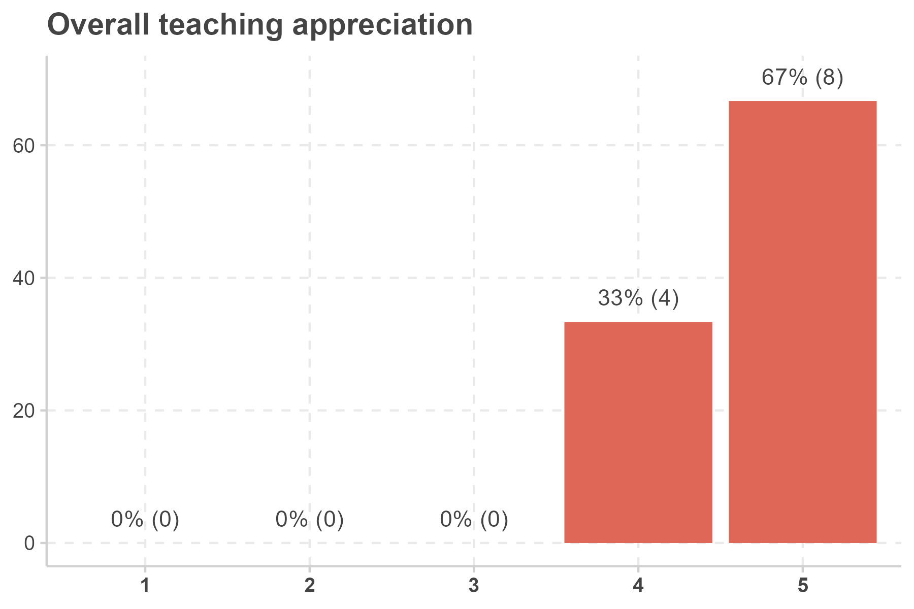

His material was really well prepared. I still consult his html. Very well made and useful.
Great and helpful course, Louis is very knowledgable, his material is great, and the sessions are perfectly structured
Very well organized and good slides/material. The class was a little bit slow, but I understand that given the different levels of familiarity of the group with R.
Having only had limited familiarity with R beforehand, this R practice class was extremely helpful to me.
Good course. Excellent material.
Good course
need for more R classes
I already know R. This class should be facultative.
Being more comfortable using R and aplying it to some of very userful statistical concepts
Great seminar with a lot of pratical cases. Well done for following a syllabus and slides you didn't put in place!
Louis is one of the most helpful lecturers I have ever met here at SciencesPo. He is super talented. He knows almost everything related to the course materials. He isalways ready to answer questions and doubts. (I tend to have too many questions.) He shows patience all the time. Econometrics is not super interesting, but Louis made it enjoyable somehow, which is much appreciated. Because of him, I may choose statistics/data science as my future study area. Thanks very much, Louis. I feel I have learnt so many things from you.
The professor was very good at clearly explaining concepts and always made sure that we understood the topic before moving on. This enabled us to gain a deeper understanding of the course content.
Content of the course.
instructor answered personal questions and was always available through email
The weekly quizzes were useful in keeping up to date with class material. The teacher was very good at explaining and answering class questions.
The content and pace of this course was more difficult than the introductory class, which I appreciated.
I appreciate how much the professor truly cared about our learning and was readily available to answer questions. The website with all of the powerpoints was really helpful.
Tasks and quizzes
Achievement of technical skills and knowledge in a concise way
Louis was always incredibly helpful and responsive. He went over the subject until he made sure that everyone understood perfectly. He replied to all of our emails immediately with great explanations. The course content was also extremely useful and interesting. The presentations and the lecture notes helped us a lot.
The course materials were very interesting and there were regular-enough assignments toforce us to keep up.
Louis helped us a lot both inside and outside class. He was an excellent teacher at explaining the class material. His feedback on homeworks and quizzes were very informative. He let us give 10 minutes of break between classes -which is not a very common thing at SciencesPothanks to him I could concentrate easily.
The teacher is very approachable and that made it easy for us to improve if we had a question or issue, and we asked him (important part). In addition to that, he tried to settle the concepts and retake some topics that might have been left unclear when he saw that we were a bit lost. In addition to that, when he saw errors in the quizzes or so, he spent his time solving them, so we could have a better experience. I think the best part of the course was care of the teacher, and for me that shows that he should take a bigger part in designing the syllabus.
Ressources numériques bien organisées et très utiles.
I am really happy with this course
Nothing! Everything is just fine. I love this course much.
Sometimes the assignment questions were difficult to understand which caused confusion in the class.
Avoid reading slides, giving detailed material to deepen and explain more than some slides that were not clear sometimes, without enough mathematical information for example.
less focus on theory and running through slides - apply the learned things together in class - do more exercises - I often felt in homeworks etc that I had never seen what the questions were asking and generally felt very lost in the course, so more focus on applicability
The quizzes and assessment often covered material that was not discussed in class.
Increase the number of questions used in the weekly quizzes. It was frustrating to only get 2 questions wrong and score a 12/20. Last semester the introductory class weekly quiz system was better.
I would have been nice to have a more centralized place with all the code from the powerpoints. Sometimes there were tables that didn't include code; it would have been nice to see that code to learn how to create similar tables.
Have more quizzes on the topics that are not assessed, with solutions clearly posted on Moodle (it was a bit inconvenient to find them through the forums)
More emphasis on the code aspect
Maybe some more in class practices.
The materials were not presented in an engaging way. At times, it felt the professor was just reading off the slides and his answers to questions did not make much sense or answer the question a lot of the time.
The course was good enough.
More short and "real" coding activities that ensure that students acquire the learnings are needed. As someone who lacks knowledge in this area, I felt I was lost sometimes or doing things without too much reasoning behind them. Although having good results in the quizzes, when we had to apply what we learnt it was a disaster, losing marks in things that I could have acquired and that I theoretically understood at the beginning. The best would be to have little activities to submit, so this kind of things are detected and improved early on. Maybe there are online resources that could help in this sense. In addition to that, I feel that, even though it is complicated, more interaction between the students and the content (discussing real cases, trying to find solutions together, etc.) could improve not only the experience but also the knowledge acquisition. In my opinion, a more social approach to the topic is needed.
Undergraduate CPES Program, Paris Sciences & Lettres

Merci beaucoup pour ce semestre, vous étiez toujours très réactif lorsque nous avions besoin d’aide pour le mémoire et nous avons beaucoup appris de cet exercice !
Ce genre de questionnaire est un peu tricky à mon avis : Peut-on évaluer la qualité de l'enseignement de 1 à 5 ? Sinon merci beaucoup pour votre suivi et vos conseils, nous aurions apprécié de peut être vous rencontrer en présentiel pour la soutenance et d'avoir vos remarques en direct. Passez une bonne fin d'année !
Merci pour cette année ! Jai appris plein de choses.
Le cours était super. Vous étiez toujours disponible et attentif aux difficultés et questions qu'on avait parfois. Les réponses apportées étaient très claires et guidées. Je trouve que ce semestre nous a permis d'appliquer les méthodes vues au premier semestre notamment et de constater qu'elles permettaient effectivement de retrouver les résultats de chercheurs. J'ai aussi beaucoup apprécié le format du cours avec un rendu par semaine et un rendez-vous de 15 minutes pour chaque groupe. Cela permettait d'une part d'alléger un peu notre emploi du temps tout en bénéficiant d'un suivi personnalisé et régulier et d'autre part d'aborder plus facilement les difficultés rencontrées. Les objectifs hebdomadaires étaient par ailleurs précis de sorte que nous ne soyons pas surchargés de travail ou perdus tout en avançant sur notre mémoire. Merci pour ce cours et pour votre investissement.
Les cours étaient très intéressants et les explications toujours bien claires. Seulement dans le suivi du projet, nous avons parfois eu l'impression que nos avancées n'étaient pas toujours vérifiées et que certaines erreurs ou exigences étaient pointées du doigt bien après, ce qui a pu être déstabilisant.
Un cours très clair avec des indications toujours efficaces à propos des devoirs à faire pour les séances successives. Merci beaucoup pour le semestre et pour votre disponibilité!